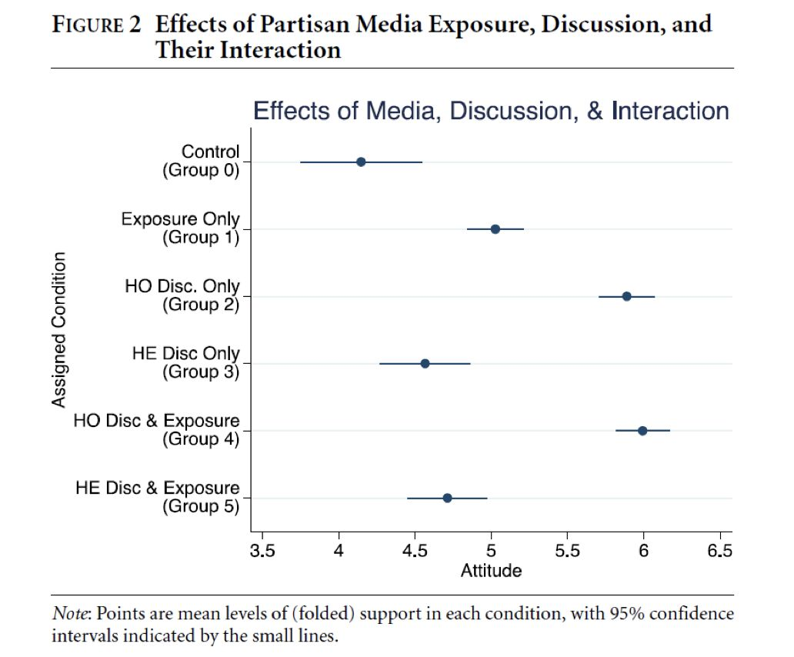
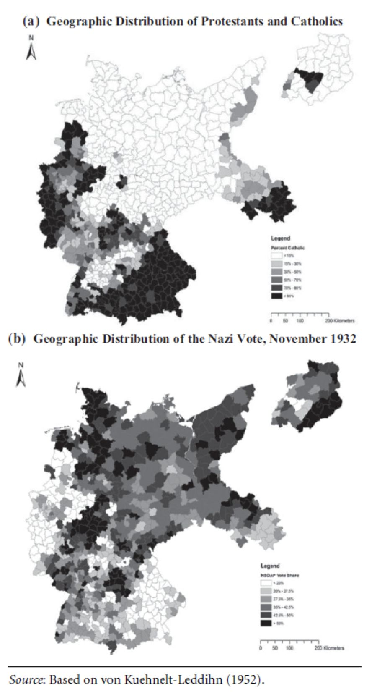

收录于合集
导语
American Journal of Political Science (AJPS)2018年第1期已于近日出炉，本刊趁热打铁为各位读者奉上政治学界顶级刊物本期的文献速报，由于本平台历来侧重传播政治科学类研究的前沿成果。故只涉及其中政治科学类论文。由于篇幅较长，本号将分上中下三期，分别加以推送。闲话少议，直接进入正题。
**
**
题目： The Economic Consequences of Partisanship in a Polarized Era
作者： Christopher McConnell （ Stanford Graduate Schoolof Business ）
**
**
政治极化（ political polarization）是近年学界十分关注的问题，无论是自由派还是保守派，都各有所需地为政治极化背书。因此，有人认为，极化或许并非政治生活的特殊状态，而更像是一般状态，这一点不仅在后发国家习以为常，也逐渐开始侵蚀欧美等发达国家。极化最为典型的表现之一便是党派政治。在美国，极化武装下的党派政治，如今渐已成为政治领域实现合作的一大障碍。既然极化在政治领域内的影响司空见惯，那极化会影响人类非政治事务中的行为吗？
与之相类似的问题，在稍早的时候已经有一些学者开展了研究，最早的学者比如Bullock、khanan等人，基于问卷调查，探讨党派倾向是否及如何影响个体的经济态度，这类研究虽然卓有成效的展示了一些发现，但问卷这种方式内生的存在社会期望偏差困境，容易反向得到问卷对象有意识的针对性回应，基于此，Gerber等人采取了行为实验研究法——即情景推论法（ecological inference），旨在化解问卷所无法解决的群体期望偏差问题，但是，情景法本身一直受到学界各方面对其解释力度的批评。总之，围绕该问题的一系列量化和实验研究，多少还存在各种难以克服的问题，拆东墙补西墙并非良策。
Christopher McConnell在借鉴以上两种研究的基础上，采取双元实验法（dual justification），即同时运用问卷调查与实验行为研究两种方法，对相同问题展开研究。另外，在问卷研究中，McConnell进一步扩大了数据的采集范围和采集视角（multiple angles），尽可能通过反映真实人口构成的、日常多元的、质量进一步提升的实验数据，来验证该问题。
首先，在实验研究方法中，McConnell通过搜集freelance（美国主要的雇佣服务网站）上的劳工个人信息，分析劳工与老板的政党倾向异同，是否会影响前者的应聘态度和工作绩效。之后，McConnell通过搜集在线市场购物网站上的信息，尝试探究消费者与销售人员的党派倾向异同，是否会影响前者的购物行为。完成了第一个实验的两个问题，McConnell再将这两个问题放置在问卷中，分别开展了一项问卷调查。因此，前后共通过4项研究形成了研究发现。
McConnell分析发现，有将近75%的问卷对象，表示宁可放弃更高的收入，也不会伺候对立党派支持者（老板）。实验数据也发现，有超过60%的求职者，主动拒绝过党派不同雇主的招聘需求。如果说拒绝别人面子过不去，那么在接受层面，研究也发现，如果经济活动双方的党派立场“英雄所见略同”，那么双方达成经济往来的概率将会是立场不相同的两倍有余。据此，McConnell认为，党派意识形态对个体的经济行为和经济活动有很显著的影响，而这点长期以来一直被低估，在一些情境下，党派因素对个体经济行为的影响甚至堪比教育水平、收入水平等固有因素。对政治极化在非政治领域中的具体影响，有大量的研究问题可以深入。
题目： No Need to Watch: How the Effects of Partisan Media Can Spread via Interpersonal Discussions
**作者： James N. Druckman **（ Northwestern University ）等人
本期AJPS还囊括了另一篇围绕政治极化问题开展的研究，只是视角从经济活动转向了媒体传播。Druckman等人研究了党派媒体（partisan media）对公众意见的影响过程和塑造机制。对于媒体和政治关系的各种研究，总是会乐此不疲的讲着一句严肃的笑话——“在媒体看来，真理是有派别的”。的确，在当下美国以及其他各国，媒体在公共领域中所扮演的力量越来越大，很多研究证实，个体往往会比较固定的青睐和坚信立场相近的媒体所传播的信息。因此，每一个主要媒体背后都捆绑着一批信众，正所谓“媒体是政治的教派”。所以，政党一方面需要热情打点党派立场倾向于自身的各个媒体，另一方面，也需要时刻警惕、伺机反扑那些党派立场与己相对的各个媒体。因为媒体的影响对象总是特定的。只要抓住了媒体，就意味着抓住了选民。长久以来，美国为人所熟知的几大主流媒体，谁支持谁已经不是什么秘密。CNN之于民主党正如FOX之于共和党。而如今，一大批新媒体相继站在民主党背后，扭曲性建构共和党政治人物的形象，从而极大地影响到公众观念的形成。
这就是媒体塑造公众意见的主要机制。在学界传统的认知看来，媒体的影响机制是针对特定群体施加信息。即媒体是信息的输出者，公众个体是信息的接受者。
但在Druckman等人看来，个体具有信息二次传播功能，即个体之间会不断地分享、增删媒体的相关信息，二次转发。用一个形象的比喻即“选择性看到信息、选择性地评论、再选择特定好友可见可不见地转发到朋友圈里”。也就是说，媒体对公众的影响程度可能被传统认知所低估。这种影响实质上包含两个成分，第一：媒体通过正式机制发布，第二：个体以自己的偏好通过非正式的机制扩散出去。而当前学界对第二个成分的研究并不突出。Druckman等人对此展开了实验研究。而实验的关键在于分离出一批没有从媒体处第一手获知到的信息，而是完全来自周围人信息传递的群体。Druckman通过一种类似于Q方法的对比实验法，对特定情境下的群体进行模拟和分析。

Druckman最终发现，那些没有从媒体处获得第一手信息、而是从周围人获得信息的个体，对该信息的获得率和认知效果不亚于前者，也就是说，媒体信息的影响度实质性的扩大了。而且，后知后觉的个体处于什么群体，接收哪些观念的人所传播的信息，对该个体围绕该信息建构的理解体系影响甚大，也就是说，信息的获得率虽然实现了，但获得的准确性很可能会有大的偏离。而且有趣的是，在同质性的群体中，这种影响是存在的，在异质性的群体中，影响依旧存在（大小有差异，但都显著）。这非常重要的说明，就算个体将自己放在多元的环境中，做到“兼听则明”，如果掌握不了信息的第一手来源，也无法逃脱被人误导的可能。
俗话说“择群就是择己”，而Druckman的研究不仅证实了这点，还证实了另一点——“倘若不回到原文，即便问了1000个不同的人，也可能误解莎士比亚心中的哈姆雷特”。
题目： Elite Influence? Religion and the Electoral Success of the Nazis
作者： Jorg L. Spenkuch （ Northwestern University ）等人
本期发表了一篇集中关注精英对大选的影响的论文。作者是西北大学的Spenkuch等人。Spenkuch溯往二战，尝试进一步探求那个耐人寻味的问题——即希特勒的纳粹政权为何能被堂而皇之的选上台？但正如King所言，这里面的很多研究实在贡献微微，不堪卒读。Spenkuch首先确信，即便在政治恐怖的氛围下，德国民众也并非整齐划一的支持纳粹，突出典型就是天主教选区，该选区整体上反对狂热主义分子。因此，纳粹的上台很可能是一个选举博弈后的理性结果。如此而言，回顾和探析当时选举的选区设置、选举过程和竞争态势就非常必要了。

如果研究1932年的德国大选选区和选举立场，宗教派别是一个非常重要的区分因素。这一点也是很多研究所公认的。Spenkuch发现，在1932年的那次大选中，天主教派选民占多数的地区更加支持民主性质的党派，而支持纳粹党的选区，主要选民多是新教派别，而且这些地区的选民不仅将纳粹党视为首要，第二支持对象竟然是德国共产党，其他各种民主党派的支持度位居其后。
先前以宗教视角来分析选举结果走势的研究中，很多都将经济利益放置在宗教因素中，研究者惊奇地发现，天主教为主地选区大多是农业区，新教为主的选区则多是工业区。因此很多研究认为，经济萧条对工人的冲击更大，因此工人相比农民，对纳粹党的支持更狂热。但这个结论却存在很大问题——如果说天主教选民对纳粹的支持度不高，那么为什么他们不投票给天主教性质的政党——中央党，而是多数投给了左翼共产党呢？因为在当时，共产党的天然支持者也基本是工人（工人是纳粹党和共产党争夺的主要对象）。因此，将宗教与经济因素强行捆绑的解释，显得不伦不类，至少说服力不够。
Spenkuch搜集了当时天主教派为主选区的投票数据，并结合对教区主教、牧首选举期间的政治态度、动员行为等信息，通过计量模型研究发现，主教本人的形象魅力和话语影响力是影响选举的关键因素，且Spenkuch建构模型下的统计参数证实，宗教因素具有周延性，在当时，几乎所有的天主教选区的宗教领袖，都号召和多次强调选民不要投票给纳粹。而最终的选举结果也显示，这些地区的纳粹党得票率较低。而考察当时选民的选举倾向，宗教领袖的态度至关重要。
因此，Spenkuch认为，宗教领袖的动员是纳粹党天主教选区得票率较低的可信因素。但是，为什么纳粹党最终成功上台呢？理论上，天主教选区选民在当时占人口比例也较多，如果按照常理，如果天主教选民整齐划一拒绝纳粹党，那么天主教性质的政党——中央党理应稳坐天主教选区第一大党，进而成为纳粹党“统一全国选票”的重要威胁。但事实上，在这些天主教选区，德国共产党获得了较高的选票，从而稀释了纳粹党重要竞争对手中央党的选票，客观上“帮助”纳粹党成为第一大党，成功上台。
Spenkuch在分析不同选举期的票选动态和领袖的动员方式，发现天主教教区的各个领袖，如果只能告诫选民纳粹的危害，而无法给选民明确指示的教首，其所在教区的共产党选票便非常高。Spenkuch据此认为，宗教领袖个人权威如果仅仅是教条性、保守性的，虽然可以防止大面积的投票给纳粹，但无法按捺选民内生的民粹激进属性——这便是当时拒绝纳粹、拥抱德国共产党的原因所在。而如果宗教领袖在使用自身权威时，采取一种“胡萝卜加大棒”式利益诱导型的策略，那么民众会更加听话，激进倾向也会很大的消弭。
Spenkuch认为，当政治精英缺乏控制民意能力、无法给民众满意答复的时候，民众的耐心很可能殆尽，从而会自我授权，形成民粹主义的狂潮。因此在某种意义上，“不是如何控制民众，而是如何控制权力”，是精英需要学会的第一个道理。
题目： The Election Monitor ’ s Curse
作者： Zhaotian Luo （ New York University ）等人
选举暴力问题一直以来都备受关注。近年来发生在世界各地的选举暴力有愈演愈烈之势头，而且许多案例也突出反映，暴力活动的出现不仅仅在选举之后，在选举期间和选举前较长的时间段内都会出现。究其原因，除了制度之内的，还有制度之外的历史文化社会因素。但对于民主政治本身而言，选举过程中的舞弊、买票卖票是最为典型的，如果说其他历史文化因素难以通过民主政治的制度建构来解决，那这一因素理应是可以通过制度的不断完善来加以化解的。一般而言，民主政治的对策是通过组建特定的、独立的监督组织来保证选举的公正。但是很多国家的民主选举即便有了监督者，但暴力问题依旧无法杜绝，而且暴力者行使暴力的原因无外乎都表示了对选举公正的怀疑和对监督者公平性的怀疑。因此，这个现象很大的击中了选举政治的要害之处，如果监督本身非但没有解决选举的公平性问题，反而有可能成为激起暴力的借口，那么民主监督本身的意义就存在很大挑战。
传统的理解对此辩解认为，有的国家民主监督制度如果天生就是政治的玩物，如同一个空壳一样，成为当权者或夺权者摆弄的对象，那么暴力很难通过监督来杜绝。还有人解释认为，民主监督组织（者）拣选过程的民主、开放、透明和公平也影响到监督后暴力的出现，除此之外，监督者的监督环境的独立、监督能力的职业、监督者自身安全和隐私的保护等等都会影响监督后暴力的出现。这些辩护声音归根结底一句话，监督者本身也需要监督，否则暴力不可避免。那么，这就形成一个循环命题。监督者需要被监督，那监督者的监督者是否也需要被监督呢？总不至于最终推给“人民”或者“公民”这样的字眼吧？那何时才是一个头呢？
因此，很可能选举监督与暴力之间有扯不开的关系，甚至在一些国家，监督很可能反而刺激了暴力的出现——因为监督让选举中的利益博弈变得更复杂，从而增加了暴力爆发的导火索。这便是Luo所提出的“监督者诅咒”。Luo在本文中，通过建构三种博弈模型，分析监督者在场的情况下，由于监督者本身行为目标的变化，所导致暴力出现可能性的变化。
Luo本文的研究发现区别于传统研究，他认为，第一，在选举监督中，过分关注和顾虑选举后可能出现暴力的监督者，要比不在乎选举后暴力是否出现的监督者，更可能诱致暴力的出现。第二，监督者在选举监督中，保持灵活的“偏向”和一定程度的“差别对待”，相对来说也有助于暴力的化解。因此，Luo认为，在监督者不在乎选举后是否可能出现暴力的情境下，监督者自身如果能够公正而不偏私，暴力会得到一定的化解；同时，倘若监督者主观上渴望最大限度减少选举后暴力，那么，一定程度的合理偏差与选择性对待，也有助于暴力风险的降低。
Luo并不否认先前的研究观点，即监督者的多元性、代表性和广泛性有助于暴力风险的化解。但Luo进一步完善了成功的选举监督所需要的相关条件，Luo认为，成功的选举监督需要两点：第一，监督者需要能够勇于批判选举中的不当现象，尽管这可能会导致选举后暴力的出现。第二，监督者自身需要得到来自其他方面监督者的广泛信任，其中包括媒体、社会公众，哪怕选举后暴力的出现部分是由于监督者监督行为所导致的。
总而言之，暴力出现与否，与我们期待监督者自身要监督什么？监督多少？监督的严不严有很大关系，因此，我们需要赋予监督者明确的目标，并且针对不同的目标给与更加明确的要求和建议。
究竟是公平最大化还是暴力最小化，在某些时候可能是两个相冲突的问题，不仅对于监督者而言，对于民主本身亦然。
原创不易，请支持我们的苹果手机用户长按二维码进行赞赏！
政观编辑部
支持学术公益品
微信扫一扫赞赏作者 __赞赏
已喜欢，对作者说句悄悄话
取消 __
发送给作者
发送
最多40字，当前共字
上一页 1/3 下一页
长按二维码向我转账
支持学术公益品
受苹果公司新规定影响，微信 iOS 版的赞赏功能被关闭，可通过二维码转账支持公众号。